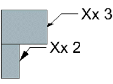
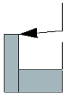
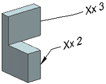
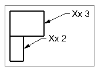
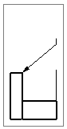
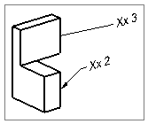

PMI arrowheads have been enhanced to provide a more pleasing appearance as the model is rotated.
PMI arrowhead behavior now includes the following characteristics and is the same for all arrowhead shapes.
In the 3D model, leader arrowheads are always drawn in the same plane as the terminating leg of the leader line.
If the termination point for the leader does not lie in the annotation plane, arrowheads may appear foreshortened in the annotation plane view.
|
 |
 |
 |
When PMI is inherited into a drafting view:
If the annotation plane is the same plane as the drafting view, NX rotates leader arrowheads so that they do not appear foreshortened.
If the drafting view is not in the same plane as the annotation plane, the arrowheads remain as they are in the 3D model.
|
 |
 |
 |
You see the new behavior when creating or editing PMI objects with leader lines.